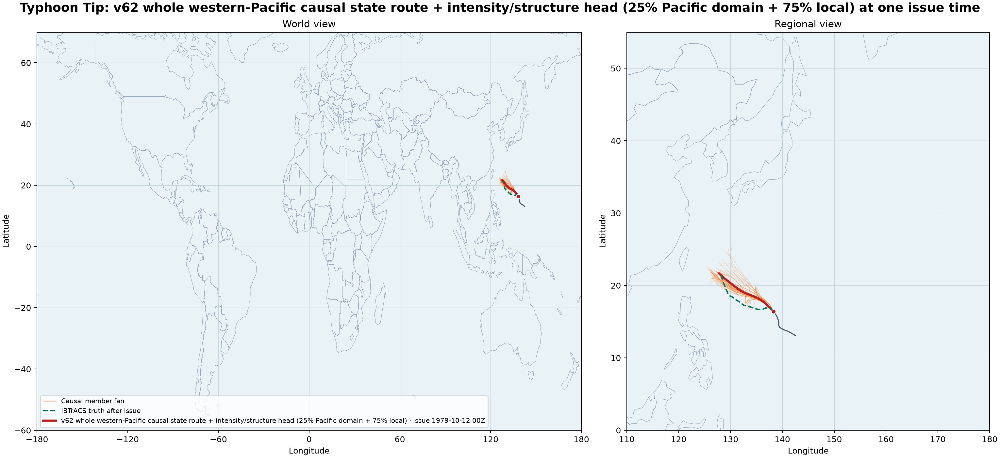
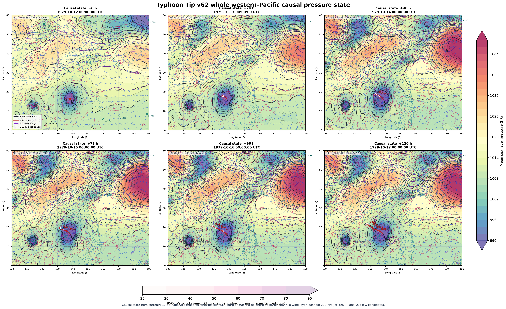
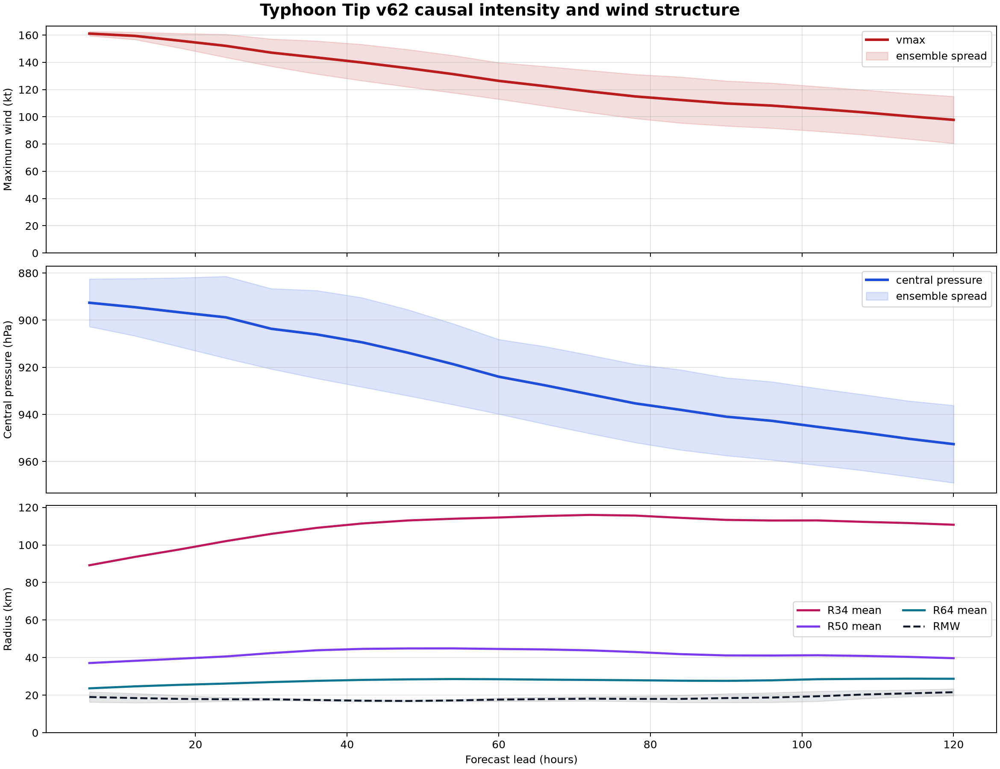

Typhoon Tip Trackformer1.1 whole western-Pacific world map
Saved values
Input: Current and past CFSR analysis only. The route uses a Pacific-wide pressure/flow state covering China, Japan, Taiwan, the Philippines, and the western Pacific.

Whole western-Pacific causal pressure forecast
Strict causal-only mode: the runner rejects any GRIB forecast step or weather valid_time after the issue. Only current/past CFSR analysis/reanalysis files and pre-issue track history are used; the whole 100-190E, 0-60N state is extrapolated from current/t-12/t-24 analysis tendency. Later IBTrACS rows are read only after inference for verification.

Predicted intensity and wind structure
The Trackformer1.1 intensity head predicts maximum wind, central pressure, RMW, and directional R34/R50/R64 radii from the current/past track window and current analysis patch only. 3 frozen Trackformer1.1 structure spatial experts provide the mean and spread.
